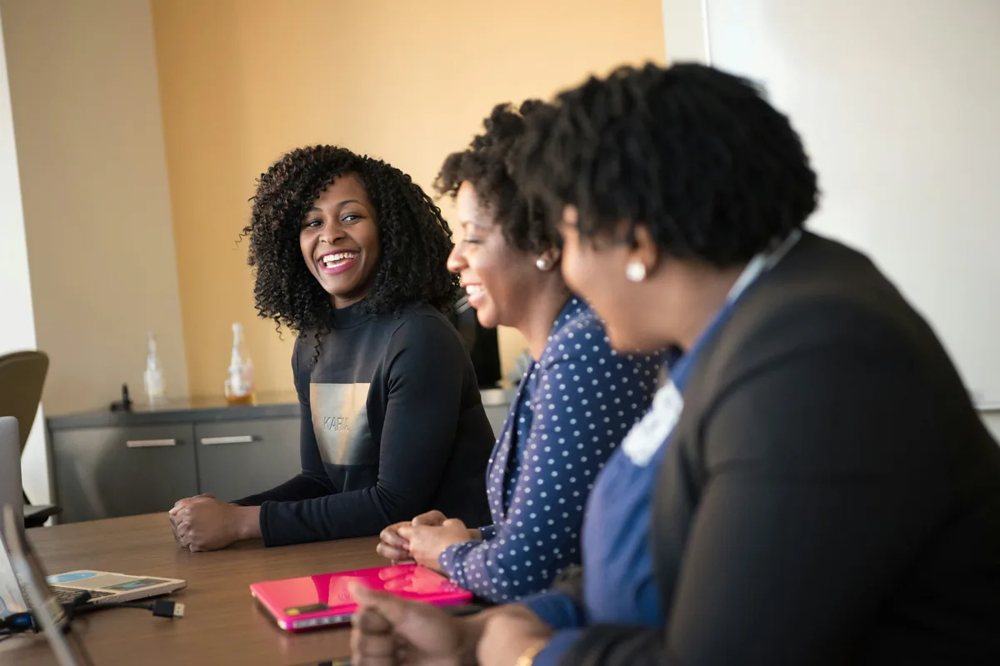

HerNext translates economic needs into practical programmes that strengthen capabilities, enterprises, livelihoods and connections to opportunity.
We work with women, young people, farmers, entrepreneurs, institutions and strategic partners to develop responses grounded in real challenges and designed for meaningful, measurable outcomes.
HerNext brings together complementary programmes across enterprise development, skills, agriculture, markets and partnerships. Each programme responds to a distinct area of opportunity while contributing to our wider purpose: advancing women’s economic transformation and inclusive economic opportunity across Africa.
Our programmes are developed with attention to local needs, practical implementation, collaboration and measurable results. Programme activities and availability may vary according to development stage, partnerships and resources.
Six programme families
One institution, six complementary programmes
The six programmes below are complementary parts of one institution, not six unrelated businesses. Women remain at the centre of our purpose, while young people, farmers, entrepreneurs, communities and institutions form the wider ecosystem in which opportunity grows.

01
In development
Women & Enterprise Development
Stronger enterprises. More sustainable livelihoods.
We support women to strengthen their businesses, develop entrepreneurial capabilities and build more productive, resilient and sustainable livelihoods. Through practical learning, business support and connections to resources and markets, the programme aims to help women translate enterprise potential into economic progress.
We work to strengthen young people’s practical capabilities and pathways into employment, entrepreneurship and meaningful economic participation. The programme may bring together skills development, mentorship, professional preparation and connections with employers and enterprise opportunities.
HerNext seeks to collaborate with TVET institutions, training providers, employers and industry experts to help connect practical learning with workplace needs and enterprise opportunities. Partnerships can support relevant training, industry exposure and pathways from skills acquisition to economic participation.
We work to strengthen agricultural capability, farmer livelihoods and participation in markets. Depending on the context and partnerships, activities may include practical training, enterprise development, climate-smart practices, farmer organisation and connections to technical services, finance and buyers.
This programme is being developed around a farmer-centred approach to animal nutrition that combines feed quality with practical feeding knowledge and stronger farmer systems. The intended model connects appropriate animal feed, training, farmer organisation and relevant market or finance relationships to support more productive and resilient livestock enterprises.
Animal feed and nutrition systems
Practical feeding knowledge
Farmer training and extension
Quality assurance and traceability, as established
We help build connections between producers, entrepreneurs, buyers and commercial partners. The programme is intended to strengthen market readiness and create pathways to domestic, regional and international opportunities through business connections, trade engagement and partnerships.
HerNext designs programmes around the needs of the people and communities involved. We listen, identify barriers, develop practical responses with appropriate partners, implement responsibly and measure what changes. What we learn helps us strengthen programmes and guide future development.
Skills
Capability
Connections
Opportunity
Measurable impact
Who we work with
Collaboration makes opportunity stronger
Our programmes may involve women, young people, farmers, entrepreneurs, communities, TVET and training institutions, employers, businesses, buyers, financial institutions, technical experts, researchers, government institutions and development partners.
The mix of participants and partners depends on the programme’s objectives, location, development stage and confirmed partnerships.
Women
Young people
Farmers
Entrepreneurs
Communities
TVET and training institutions
Employers
Businesses
Buyers
Financial institutions
Technical experts
Researchers
Government institutions
Development partners
Programme status
Clear information about where each programme stands
We use consistent status labels on programme cards. Only activities currently being delivered with open participation are ever described as active.
Active
Activities are currently being delivered and participation is open or underway.
Upcoming
An activity is planned, with launch or participation details to be announced.
In development
The programme is being designed, tested or prepared with potential participants and partners.
All six programmes are currently in development. Nothing on this page is open for applications. Register your interest and we will contact you as opportunities open. HerNext never charges a fee to register or to take part.
We welcome collaboration with organisations and individuals who can contribute expertise, training, funding, technology, market access, research, finance or implementation capacity. Together, we can develop practical programmes that respond to real needs and create measurable economic outcomes.
Whether you are seeking to collaborate, contribute expertise, connect people to markets or support a programme, we invite you to start a conversation with HerNext.